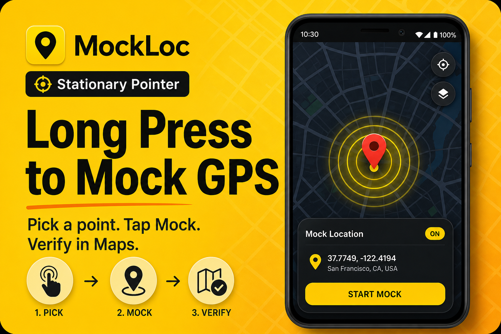
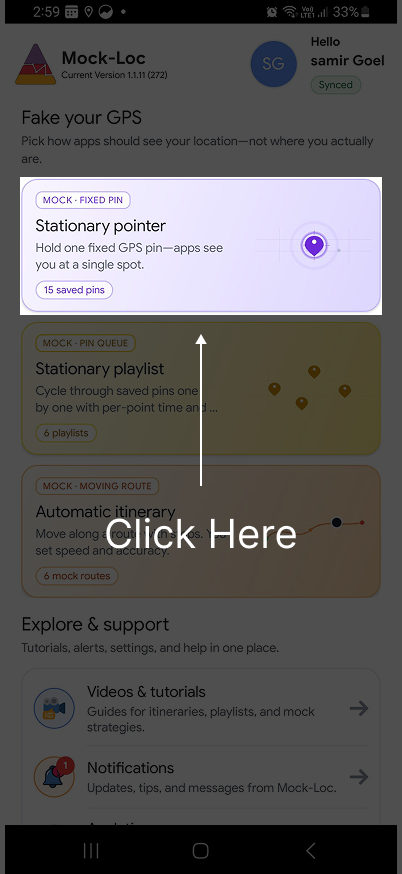
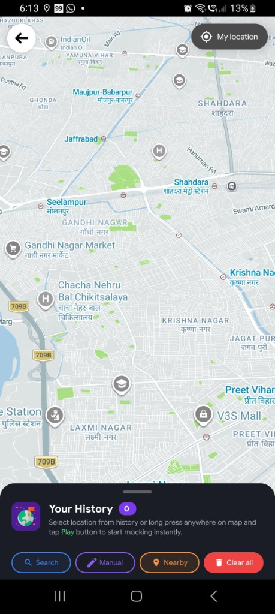

Quick start · 5 min
Long press to mock GPS
Pick a point on the map, tap Mock, and verify in any app.
Knowledge base
Setup walkthroughs, Stationary Pointer tips, and deep dives — everything you need on Android.
GET IT ON Google PlayQuick start

Pick a point on the map, tap Mock, and verify in any app.

Enable Developer options and select Mock Loc as your mock app.

Why Android asks for a mock app — and how to choose Mock Loc.
Stationary Pointer
Drop a fixed pin, confirm in the bottom sheet, and start mocking.
Type an address, pick a result, confirm, and tap Mock.
Pick a category, review markers within ~1.5 km, tap Play.

Use the on-screen keypad for exact coordinates, then tap Play.
More guides
No guides match your search. Try search, nearby, or setup.